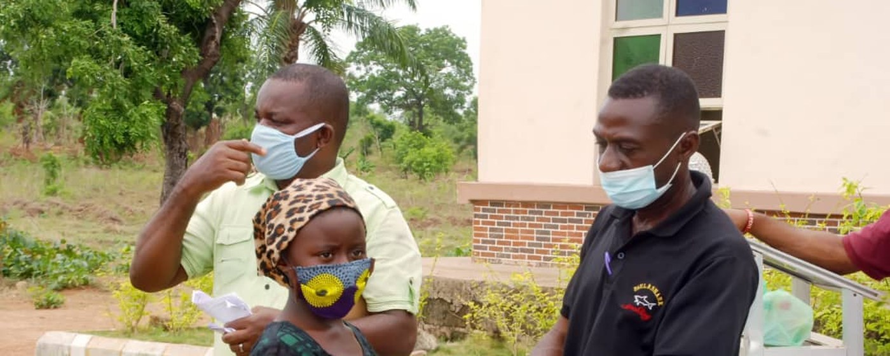

Sr. Augustina Abuo Memorial Medical Clinic
At St. Joseph’s Orphanage, Idum-Mbube. It has attended to close to 500 students and more than 1,000 community members since it opened.


A child too ill to learn is not being educated. Our clinics sit inside the school system: free to the children who study there, affordable to everybody else in the community.
Why a clinic belongs in a school
Healthcare turned out to be one of the largest obstacles to school attendance, to learning and to the general well-being of children in rural Nigeria. Many pupils could not get medical attention at all, because their parents and carers could not afford the bills.
At St. Joseph’s Orphanage, Idum-Mbube. It has attended to close to 500 students and more than 1,000 community members since it opened.
Serving the pupils of the John Stilley Schools and the surrounding community at Victoria, Ikom.
Care is free of charge to pupils, and provided at an affordable cost to other members of the communities where our schools are.
Medical outreach
Alongside the clinics, we take healthcare to communities that have none: rural villages, refugee settlements, schools, orphanages and other underserved places. The outreach concentrates on prevention, early detection, health education and treatment.
Medical screening, basic consultations, and referral of anything that needs further medical attention.
Malaria testing and treatment, essential medicines, and blood pressure and blood sugar checks.
Health education, hygiene teaching and counselling, so that families take on more of their own health.
What children are taught
Through the clinics and the outreaches, school children are taught personal hygiene, environmental sanitation, proper handwashing, safe drinking water, nutrition, malaria prevention, and maternal and child health — and taught to seek medical attention early rather than waiting until an illness is severe.
In 2026 we worked with the Nigerian Red Cross Society and the National Commission for Refugees, Migrants and Internally Displaced Persons to reach vulnerable communities.
Marked in our schools as practical teaching, not an assembly.
Used to encourage testing and early diagnosis, and to discourage self-medication and other harmful practices.
Support the work
CORAfrica is a registered 501(c)(3) in the United States, so gifts from US donors are tax-deductible. Give monthly, and we can plan.